Chapter 3 · Part 1 — Player Piano
Outside, the sad tune played on.
“It’s coming from there,” said Annie.
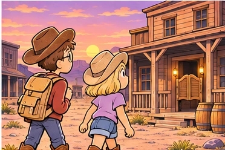
She crept toward a building that had a sign with the word HOTEL on it. Jack limped after her.
Annie slowly pushed open a swinging door. They peeked inside.
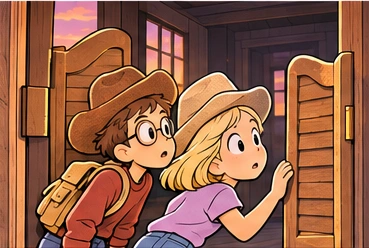
The fading daylight lit a piano in the corner of the room. The keys were moving up and down. But no one was there!
“Yikes,” whispered Annie. “A ghost playing the piano!”
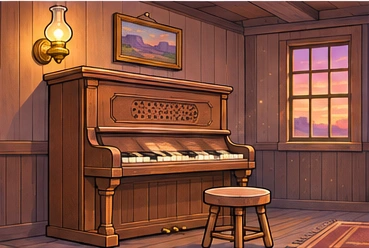
Suddenly the keys were still. The air got very cold.
“No. No way,” said Jack. “There’s no such thing as a ghost.”
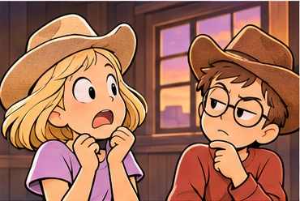
“We saw one in ancient Egypt,” whispered Annie.
“Yeah, but that was ancient Egypt,” said Jack. Even so, his heart raced.
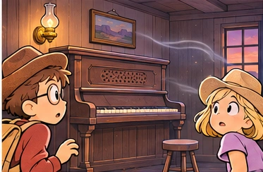
“I’ll look it up.” Jack pulled out the Wild West book. He found a picture of a piano. He read aloud:
Player pianos were popular in the Old West. The piano played automatically when someone pumped its floor pedals. Later, with the help of electricity, the piano played all by itself.
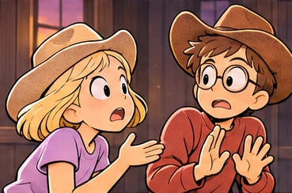
“Whew.” Jack closed the book. “I knew there was an answer,” he said. “It must be electric, and somehow it came on.”
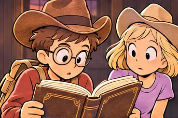
“I didn’t know they had electricity in the Wild West,” said Annie.
“They didn’t,” said Jack.
He looked at Annie. “Oh, man, let’s get out of here!” he said.
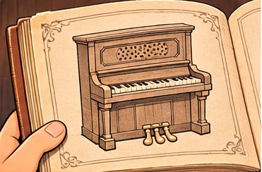
Jack and Annie backed out of the hotel.
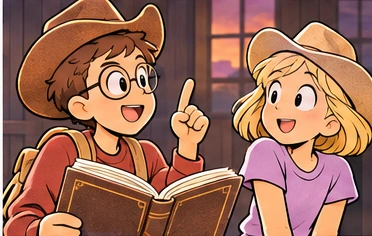
When they got outside, they heard another sound: horse hooves thumping against the hard ground.
A cloud of dust seemed to be moving toward the town. As it got closer, Jack saw three riders. They were herding a small band of horses.
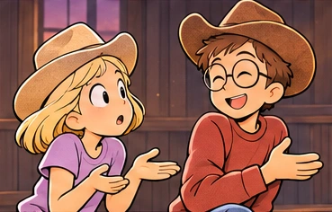
“Hide!” Jack said.
“Where?” said Annie.
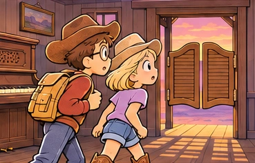
Jack looked around wildly. He saw two barrels outside the hotel.
“There!” he said.
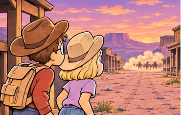
Jack and Annie hurried to the empty barrels. Jack climbed inside one and tried to scrunch down. His hat wouldn’t fit! He jumped out of the barrel and threw his hat into the hotel.
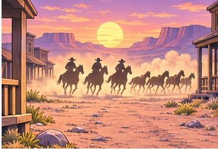
“Mine, too!” said Annie.
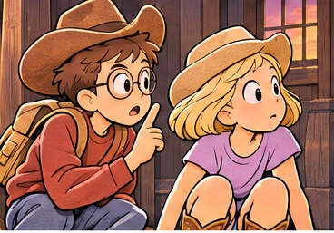
Jack grabbed hers and threw it. Then he scrambled back into the barrel. Just in time.
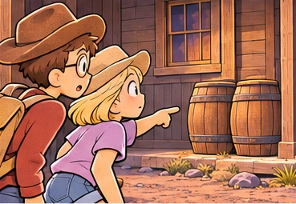
Jack heard the horses thunder into town.
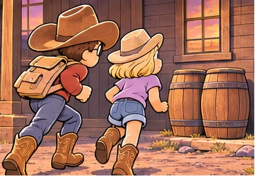